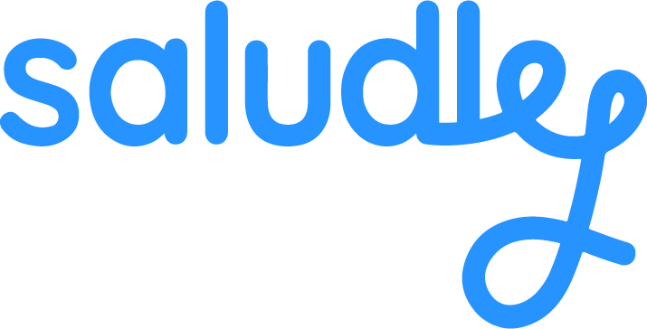
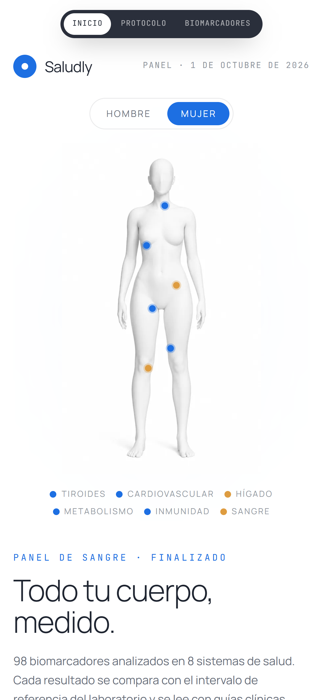
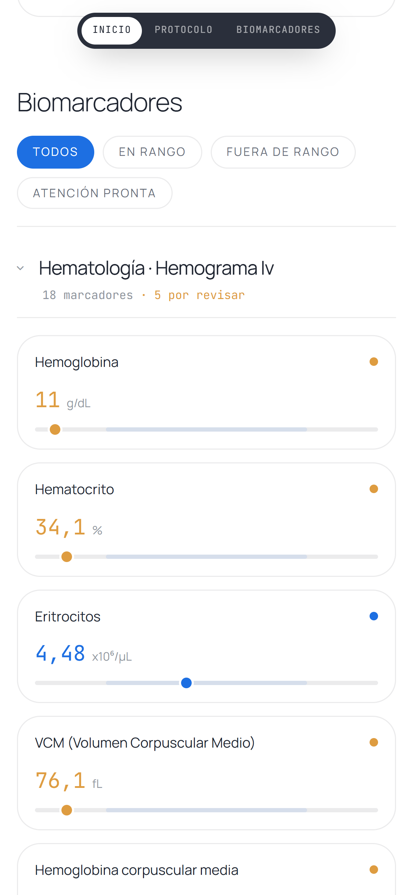
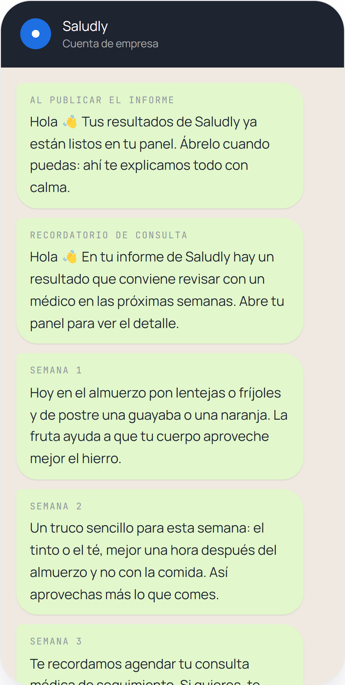
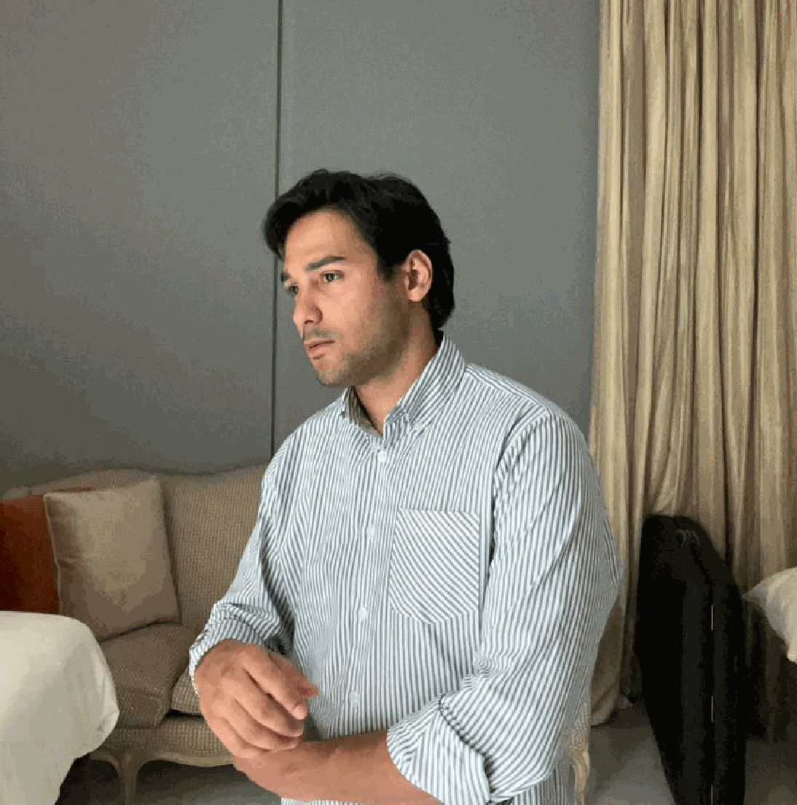
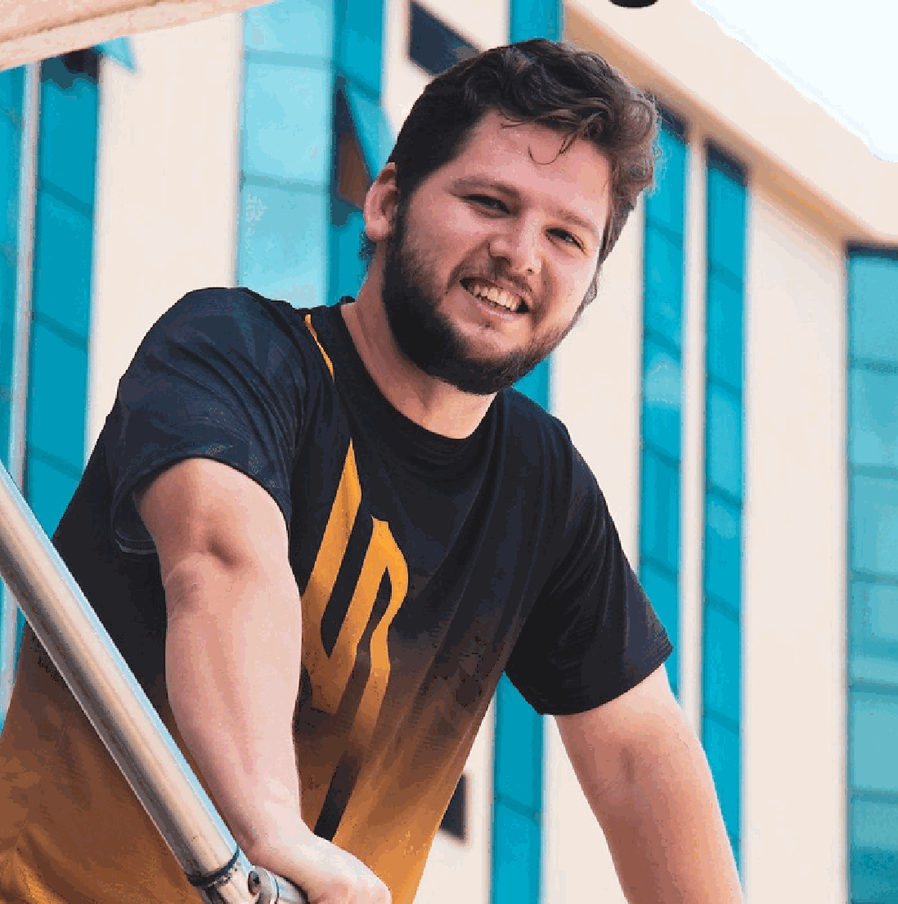

Saludly lee tu laboratorio con reglas clínicas, te dice qué merece atención y te acompaña un año por WhatsApp para prevenir.
Ferritina, VCM, ALT, TSH. El paciente no sabe qué está bien, qué no y qué hacer.
Mientras tanto, el PDF se queda en el correo y nadie le hace seguimiento.
Un hierro bajo o una glucosa limítrofe se pueden atender a tiempo, si alguien los ve.
¿Y ahora qué hago con esto?

2Una enfermera toma la muestra y mide presión, cintura, peso y talla.
Procesa un panel de sangre con más de 100 biomarcadores.
Evalúa cada valor con reglas clínicas y guías colombianas.
Un médico revisa los hallazgos antes de que lleguen al paciente.
Informe claro, recomendaciones y una receta al día por WhatsApp.
El paciente elige sus 3 objetivos, por ejemplo tener más energía o prevenir diabetes, y las recomendaciones se ordenan según lo que a él le importa.
Y lo vamos a probar con médicos reales antes de llegar a los primeros pacientes.
Capturas del demo con un caso de prueba sintético.



Un chatbot solo no es confiable para leer exámenes. En Saludly, cada umbral lo evalúa código escrito con guías clínicas; la IA solo pone en palabras lo que el motor ya decidió. Nada es un diagnóstico y el médico tiene la última palabra.
| Opera en Colombia | Explica cada resultado | Acompañamiento en WhatsApp | Acompaña todo el año | |
|---|---|---|---|---|
| SaludlyToma en casa, médico revisor y WhatsApp | ||||
| SuperpowerMás de 100 biomarcadores con membresía en EE. UU. | ||||
| Laboratorio tradicionalEntrega el PDF y ahí termina | ||||
| Chequeo ejecutivoUna consulta al año, costosa | ||||
| Apps de bienestarConsejos generales, sin tus exámenes |
Las EPS ya pagan exámenes en la ruta de promoción y mantenimiento. Saludly los convierte en detección temprana y seguimiento, para atender a tiempo lo que después sale más caro.

Fundé Saludly en 2025: laboratorio clínico y enfermería a domicilio en Bogotá.
Trabajé en marketing médico con 10 de los mejores doctores del país, así que sé cómo vender salud.
Hice el producto yo mismo: Saludly, que hoy está en demo.

10 años como desarrollador full stack.
Asesoró la creación del cerebro del agente de IA de Saludly y lidera la tecnología para pasar del demo a la operación con pacientes.
Los médicos aliados recomiendan Saludly a sus pacientes, y con 100 casos reales abrimos la conversación con las EPS.
Tokens para leer, redactar y acompañar a cada paciente.
Pruebas de bajo costo con los médicos aliados.
Médicos que recomiendan Saludly y nos abren la puerta a las EPS.